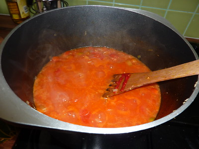

Tomato Sauce with Onion and Butter
Home

Description
This is Tomato Sauce with Onion and Butter from Hazan's Essentials of Classic Italian Cooking. It is excellent if you have the time to make it.
This amount of sauce is good for 1 to 1.5 pounds of pasta. You can freeze this sauce for later.
Ingredients
- 2 pounds fresh tomatoes, or 2 cups canned imported plum tomatoes, cut up with their juice
- 5 tablespoons butter
- Salt
- 1 medium onion, peeled and cut in half
Steps
- Put the canned or fresh tomatoes into a saucepan.
- Add butter, onion, and salt.
- Cook uncovered at a very slow but steady simmer for 45 minutes or until the fat floats free from the tomato. Stir from time to time and mash any large tomato pieces with your spoon.
- Taste and correct for salt.
- Discard the onion